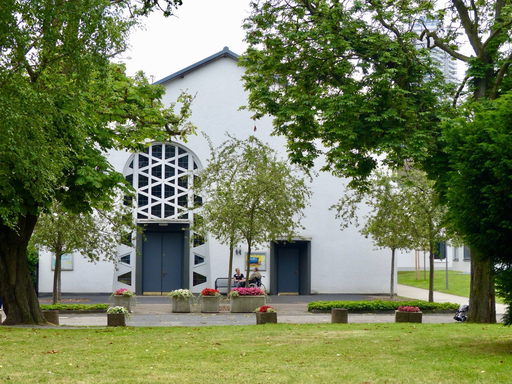

Immobilie in Köln-Riehl verkaufen?Der älteste Stadtteil Kölns — und das ist keine Floskel, sondern eine Zahl.
49,0 Jahre beträgt das Durchschnittsalter, der höchste Wert aller 86 Stadtteile bei einem Stadtmittel von 42,7. Wer hier verkauft, verkauft an einen Käuferkreis, der auf andere Dinge achtet als anderswo.
49,0 Jahre — kein Stadtteil Kölns ist älter
Die Stadt Köln führt für jeden Stadtteil das Durchschnittsalter der Bevölkerung. Riehl steht mit 49,0 Jahren an der Spitze, vor Zündorf mit 47,8 und Weiß mit 46,7. Der Kölner Mittelwert liegt bei 42,7 Jahren. Riehl ist damit gut sechs Jahre älter als die Stadt insgesamt.
Anders als bei vielen Kennzahlen lässt sich hier genau sagen, woher das kommt. In der zweiten Hälfte der 1920er Jahre entstanden in Riehl mehrere Wohnsiedlungen gegen die damalige Wohnungsnot — und auf dem früheren Kasernengelände an der Boltensternstraße eine Altenstadt, die heutigen Riehler Heimstätten. Die Einwohnerzahl verdreifachte sich in dieser Zeit. Was damals angelegt wurde, prägt die Altersstruktur bis heute.
Für den Verkauf ist das keine Randnotiz, sondern die wichtigste Information dieser Seite. Ihr Käuferkreis sieht anders aus als in Ehrenfeld oder der Südstadt, und er achtet auf andere Dinge.
Worauf ältere Käufer zuerst schauen
Nach unserer Erfahrung entscheiden in dieser Altersgruppe vier Fragen überdurchschnittlich häufig über eine Zusage — und alle vier lassen sich vorab beantworten:
- Gibt es einen Aufzug? Ab dem zweiten Obergeschoss ist das oft kein Komfortmerkmal mehr, sondern Bedingung.
- Wie viele Stufen bis zur Wohnungstür? Auch das Erdgeschoss hat manchmal fünf Stufen — Käufer fragen danach, bevor sie kommen.
- Ist das Bad bodengleich oder umbaubar? Wo eine Wanne steht, wird der Umbau eingepreist.
- Was ist fußläufig erreichbar? Einkauf, Arzt, Haltestelle in Gehminuten, nicht in Metern.
Wer eine Wohnung anbietet, die diese Punkte erfüllt, sollte sie ausdrücklich benennen — sie sind hier ein echter Vorteil. Wer sie nicht erfüllt, sollte es trotzdem offen sagen. Der Käuferkreis in Riehl ist breiter als das Durchschnittsalter vermuten lässt: 14,0 Prozent der Haushalte leben mit Kindern, 54,6 Prozent bestehen aus einer Person, und mit 8,4 Prozent geförderten Wohnungen ist der Stadtteil sozial gemischter als die meisten Lagen dieses Preisniveaus.
Wie gut passt Ihre Wohnung zum Riehler Käuferkreis?
Kreuzen Sie an, was auf Ihre Immobilie zutrifft. Die Einschätzung darunter sagt Ihnen, worauf Sie bei der Vermarktung besonders achten sollten. Das ist kein Bewertungsverfahren, sondern eine Vorbereitungshilfe.
Solide Ausgangslage
Ihre Wohnung bringt einiges mit, was hier gefragt ist. Führen Sie diese Punkte im Exposé einzeln auf, statt sie unter „gute Ausstattung" zusammenzufassen.
Die Gewichtung beruht auf dem, was in dieser Altersstruktur erfahrungsgemäß zuerst gefragt wird — sie ist keine Bewertung und kein Wertfaktor. Über den Preis entscheiden Lage, Zustand, Grundriss und Marktlage. Was Ihr Objekt erzielen kann, klärt die kostenlose Bewertung.
Der Wohnungsbestand ist 2025 kleiner geworden
Zwei von 86 Kölner Stadtteilen hatten 2025 einen negativen Wohnungssaldo. Riehl steht mit minus 50 Wohnungen an der Spitze dieser kurzen Liste, vor Altstadt-Süd mit minus 37. In allen anderen Stadtteilen wurde unter dem Strich gebaut.
Die Statistik nennt keine Gründe; sie zählt den Saldo. In einem Stadtteil mit großen zusammenhängenden Anlagen wie den Riehler Heimstätten kommen Sanierung, Umbau oder Umnutzung ganzer Gebäude in Frage — bei solchen Vorhaben fallen zeitweise oder dauerhaft Einheiten weg. Belegen lässt sich das aus der Zahl allein nicht.
Was sich sagen lässt: Das Angebot wächst hier nicht nach. 6.157 Wohnungen stehen 5.844 Haushalten gegenüber, also weiterhin ein leichter Überhang — anders als in Mülheim, wo 1.034 Haushalte mehr gezählt werden als Wohnungen. Riehl ist kein Markt, in dem Käufer aus Mangel zugreifen. Er ist ein Markt, in dem das einzelne Angebot überzeugen muss.

Beim Preis liegt Riehl im oberen Mittelfeld: 4.606 Euro je Quadratmeter im Weiterverkauf, ermittelt aus 54 Kaufverträgen des Jahres 2025. Für eine durchschnittliche Wohnung von 73,5 Quadratmetern ergibt das rechnerisch etwa 339.000 Euro. Neubau- oder Umwandlungsverkäufe weist der Marktbericht für Riehl nicht gesondert aus — es waren zu wenige, was zum negativen Bestandssaldo passt.
Zoo, Flora, Rheinseilbahn — die Lage verkauft mit
Kölner Zoo, Flora und Botanischer Garten, die Rheinseilbahn und die Riehler Aue liegen sämtlich in Riehl. Das ist eine Lagequalität, die sich im Preisniveau niederschlägt — und die man im Exposé konkret machen kann, statt sie als „grüne Lage" zu verallgemeinern.
Der Zuschnitt des Stadtteils ist dabei überschaubar. Zwei Ausfallstraßen begrenzen ihn: die Riehler Straße zwischen Zoo und Rhein Richtung Mülheimer Brücke, im Westen die Amsterdamer Straße nach Norden. Die Boltensternstraße führt als Verlängerung der Rheinuferstraße an den Riehler Heimstätten vorbei.
Daraus ergeben sich die Unterschiede, die für eine Bewertung zählen. Zum Rhein und zur Riehler Aue hin sind Lage und Bodenwerte am höchsten; hier zahlen Käufer für Nähe zum Wasser und zum Grün. Entlang der Ausfallstraßen steht die Anbindung gegen die Verkehrsbelastung — Ausrichtung und Fenster entscheiden. Im Umfeld der Heimstätten prägen große Anlagen und alter Baumbestand das Bild, mit entsprechend ruhigen Wohnlagen.
Die Bodenrichtwerte spiegeln das: BORIS NRW weist zum 1. Januar 2026 vier Wohnbauland-Zonen zwischen 1.260 und 2.300 Euro je Quadratmeter aus, der Median liegt bei 1.585. Zwischen günstigster und teuerster Zone liegen 83 Prozent — bei einem Stadtteil dieser Größe ein deutlicher Unterschied, der über die Adresse entschieden wird.
Architektonisch eine Besonderheit
Riehl wurde 972 erstmals urkundlich erwähnt und blieb bis zum Ende des 19. Jahrhunderts ländlich geprägt. Der Sprung kam mit den Siedlungen der 1920er Jahre. Architektonischer Höhepunkt aus dieser Zeit ist St. Engelbert, die erste moderne Kirche Kölns. Wer eine Wohnung aus diesem Bestand verkauft, verkauft ein Stück Kölner Baugeschichte — das gehört ins Exposé, wenn das Haus dazugehört.
Alle Zahlen auf einen Blick
Amtliche Werte — Quellen und Methodik.
Richtwerte, kein Preisschild. Für Ihr Objekt zählt der Zustand im Detail — dafür rechnen wir kostenlos eine Wertindikation oder kommen persönlich vorbei.
Auch tätig im Stadtbezirk Nippes und Umgebung:
Was Eigentümer in Riehl am häufigsten fragen
2025 wurden 54 Weiterverkäufe beurkundet, im Schnitt 4.606 Euro je Quadratmeter. Für eine durchschnittlich große Wohnung von 73,5 Quadratmetern ergibt das rechnerisch etwa 339.000 Euro. Die Spanne ist allerdings breit, weil die Bodenrichtwerte im Stadtteil zwischen 1.260 und 2.300 Euro je Quadratmeter liegen — je nachdem, ob Ihre Adresse zum Rhein hin oder an einer Ausfallstraße liegt. Dazu kommen Etage, Aufzug, Zustand, Grundriss und Hausgeld.
Nein, es verschiebt nur, worauf Sie achten sollten. Mit 49,0 Jahren Durchschnittsalter liegt Riehl an der Spitze aller 86 Stadtteile, der Kölner Wert beträgt 42,7. Der Grund ist historisch: In den 1920er Jahren entstand auf dem früheren Kasernengelände an der Boltensternstraße eine Altenstadt, die heutigen Riehler Heimstätten. Für den Verkauf heißt das, dass Aufzug, Schwellenfreiheit, ein bodengleiches Bad und fußläufige Nahversorgung überdurchschnittlich oft gefragt werden. Wer diese Punkte erfüllt, sollte sie einzeln benennen. Gleichzeitig leben 14,0 Prozent der Haushalte mit Kindern — der Käuferkreis ist breiter, als die eine Zahl vermuten lässt.
Dass ein Teil des lokalen Käuferkreises ausfällt und Sie die übrigen gezielter ansprechen müssen. Verschweigen hilft nicht: Interessenten sehen die Etage im Exposé und fragen nach dem Aufzug, bevor sie einen Termin vereinbaren. Sinnvoller ist, die Stärken herauszustellen, die mit der Etage kommen — Aussicht, Ruhe, Helligkeit, oft ein besserer Schnitt unter dem Dach. Und die Zielgruppe entsprechend zu wählen: Berufstätige, Paare, Familien. In Riehl leben immerhin 14,0 Prozent der Haushalte mit Kindern.
Die Statistik der Stadt weist für Riehl einen Rückgang um 50 Wohnungen aus — der stärkste aller 86 Stadtteile; nur Altstadt-Süd hat mit minus 37 ebenfalls einen negativen Saldo. Gründe nennt die Statistik nicht. In einem Stadtteil mit großen zusammenhängenden Anlagen kommen Sanierung, Umbau oder Umnutzung ganzer Gebäude in Frage, bei denen zeitweise oder dauerhaft Einheiten wegfallen. Für Sie heißt das vor allem, dass das Angebot nicht nachwächst. Ein Selbstläufer ist der Markt deshalb trotzdem nicht: Mit 6.157 Wohnungen bei 5.844 Haushalten besteht weiterhin ein leichter Überhang.
Vier Zonen führt BORIS NRW zum 1. Januar 2026 für Riehl, die günstigste bei 1.260, die teuerste bei 2.300 Euro je Quadratmeter — dazwischen liegen 83 Prozent, der Median bei 1.585. Tendenziell steigen die Werte zum Rhein und zur Riehler Aue hin. Hinzu kommen Zuschnitt, Bebaubarkeit, Geschossflächenzahl, vorhandene Bebauung und Baulasten. Wir prüfen die Zone anhand der Adresse, bevor wir rechnen — bei dieser Spanne ist das keine Formalie.
Beziffern lässt sich das nicht seriös, aber es wirkt — die Lagequalität ist einer der Gründe, warum Riehl mit 4.606 Euro je Quadratmeter über dem Niveau vergleichbarer Stadtteile im Kölner Norden liegt. Wichtig ist, konkret zu werden: Kölner Zoo, Flora und Botanischer Garten, Rheinseilbahn und Riehler Aue liegen alle im Stadtteil. Diese Nähe in Gehminuten anzugeben, wirkt stärker als die Formulierung „grüne Lage", die in jeder zweiten Anzeige steht.
Als Faustregel: Kleine Maßnahmen ja, große selten. Eine bodengleiche Dusche statt Wanne ist überschaubar und nimmt ein Argument aus der Verhandlung. Ein nachträglicher Aufzug dagegen ist eine Sache der Eigentümergemeinschaft, dauert und rechnet sich vor einem Verkauf fast nie. Entscheidend bleibt die Frage, ob eine Maßnahme mehr einbringt, als sie kostet. Wir sehen uns das Objekt an und sagen Ihnen, was sich lohnt und was Sie sich sparen können.
Für Häuser bildet der Grundstücksmarktbericht in Riehl keinen eigenen Durchschnitt — es werden zu wenige gehandelt. Ein Haus wird als Gesamtobjekt bewertet, und der Bodenwert ist bei Werten zwischen 1.260 und 2.300 Euro je Quadratmeter ein erheblicher Posten: Bei 400 Quadratmetern Grundstück sind das je nach Zone 504.000 bis 920.000 Euro allein für den Boden. Dazu kommen Baujahr und Sanierungsstand, Energieträger, Zimmerzahl und Grundriss, Außenflächen und Stellplätze.
Kaum. Der Grundstücksmarktbericht weist für Riehl weder Neubau- noch Umwandlungsverkäufe gesondert aus, weil es zu wenige waren — passend zum negativen Bestandssaldo von minus 50 Wohnungen. Anders als etwa in Weidenpesch, wo 2025 jede zweite verkaufte Wohnung ein Neubau war, treten Sie hier praktisch ausschließlich gegen andere Bestandswohnungen an. Das macht den Vergleich für Käufer einfacher und den Zustand Ihrer Wohnung wichtiger.
Nein. Die Bewertungsanfrage ist kostenlos und unverbindlich. Durch die Anfrage entsteht kein Maklerauftrag.
Bildnachweis: Riehler Heimstätten aus der Luft: Raimond Spekking · Riehler Heimstätten: Geolina163 · Flora: Ladislaus Hoffner, alle CC BY-SA 4.0 über Wikimedia Commons. Marktdaten: Gutachterausschuss für Grundstückswerte in der Stadt Köln (Grundstücksmarktbericht 2026, Berichtsjahr 2025), BORIS NRW zum 1. Januar 2026, Stadt Köln – Amt für Stadtentwicklung und Statistik (Einwohner, Haushalte, Durchschnittsalter und Wohnungsbestand zum 31. Dezember 2025). Keine Rechtsberatung.